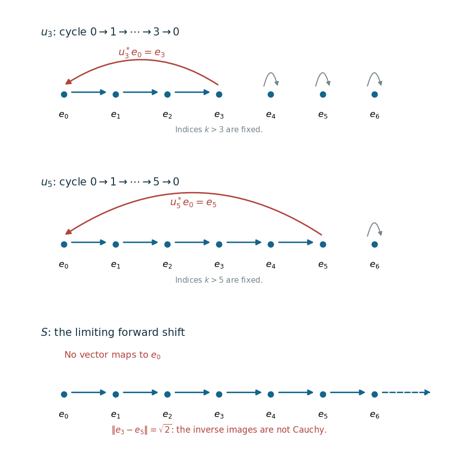

Completeness of the automorphism group
The u-topology describes convergence to an automorphism already known to exist. Completeness asks for more: must a Cauchy family of automorphisms have an automorphism as its limit? The answer is yes when the uniformity controls both forward and inverse actions on the predual. The two controls produce mutually inverse limiting operators in a standard form.
Our inputs are the standard-implementation theorem, the cone estimates and spanning property, and the decomposition of normal functionals. The diagonal standard form used in the example is constructed in CL04. These are written proofs, not source citations standing in for proofs. The source statement of completeness is Takesaki, Theory of Operator Algebras II, IX.1, the paragraph following equation (16); the argument here supplies all its Cauchy-net steps. The standard-form background also has the freely readable research account U. Haagerup, The standard form of von Neumann algebras, §3.
Completeness for the specified uniformity
Let \(M\) be any von Neumann algebra. For \(f\in M_*\) and \(\alpha,\beta\in\operatorname{Aut}(M)\), set \[ d_f(\alpha,\beta)= \max\{\|f\circ\alpha-f\circ\beta\|, \|f\circ\alpha^{-1}-f\circ\beta^{-1}\|\}. \tag{UC.1} \] The entourages are \[ E(F,\varepsilon)= \{(\alpha,\beta):d_f(\alpha,\beta)<\varepsilon \text{ for every }f\in F\}, \quad F\subset M_*\text{ finite},\quad\varepsilon>0. \tag{UC.2} \] Each \(d_f\) is symmetric, vanishes on the diagonal, and satisfies the triangle inequality. Thus \(E(F,\varepsilon/2)\circ E(F,\varepsilon/2)\subset E(F,\varepsilon)\); unions of finite test sets and smaller positive tolerances refine intersections. These sets define a uniformity. It is separated because normal functionals separate distinct elements of \(M\), and hence distinct automorphisms. Its topology is the u-topology by CL01, which proves that forward convergence to a given automorphism already entails inverse convergence to its inverse.
Theorem. Every Cauchy net for (UC.2) converges to an automorphism for (UC.2). No separability, sigma-finiteness or countable cofinality assumption is required.
Proof. Fix a standard form \((M,H,J,P)\), and write \(u_i=U(\alpha_i)\) for the standard implementers of a Cauchy net. For a positive normal functional \(f\), let \(\xi_f\in P\) be its unique representative. CL01 and the lower cone estimate give \[ \begin{aligned} \|(u_i-u_j)\xi_f\|^2 &\le \|f\circ\alpha_i^{-1}-f\circ\alpha_j^{-1}\|,\\ \|(u_i^*-u_j^*)\xi_f\|^2 &\le \|f\circ\alpha_i-f\circ\alpha_j\|. \end{aligned} \tag{UC.3} \] Both vector nets are Cauchy. Every vector of \(H\) is a complex linear combination of four vectors of \(P\), by SE01. Finite addition and scalar multiplication therefore show that \((u_i\eta)\) and \((u_i^*\eta)\) are Cauchy for every \(\eta\in H\).
For clarity, Hilbert completeness applies to these arbitrary nets. For any Cauchy net \((x_i)\) in a Hilbert space, choose successively indices \(i_n\) dominating \(i_{n-1}\) and a threshold beyond which every pair is within \(2^{-n}\). The sequence \((x_{i_n})\) is Cauchy and has a limit \(x\). For every \(i\) beyond that threshold, comparison with \(x_{i_m}\), followed by \(m\to\infty\), gives \(\|x_i-x\|\le2^{-n}\). Thus the whole net converges. The selected sequence need not be cofinal in the index set.
Define the pointwise limits \[ V\eta=\lim_i u_i\eta,\qquad W\eta=\lim_i u_i^*\eta. \tag{UC.4} \] Linearity passes through limits. Norm continuity gives \(\|V\eta\|=\|W\eta\|=\|\eta\|\), so both are bounded isometries. They are mutual inverses. Indeed \[ \begin{aligned} \|u_i u_i^*\eta-VW\eta\| &\le \|u_i^*\eta-W\eta\| +\|(u_i-V)W\eta\|\longrightarrow0. \end{aligned} \tag{UC.5} \] Since the left product is the identity, \(VW=1\). Interchanging \(u_i\) and \(u_i^*\) gives \(WV=1\). Hence \(V\) is unitary and \(W=V^*\).
The standard-form properties survive this two-sided limit. Norm closure of \(P\) gives \(VP\subset P\) and \(WP\subset P\); the inverse identities turn these into \(VP=P\). Passing \(u_iJ=Ju_i\) to pointwise limits gives \(VJ=JV\). For every \(a\in M\), \[ u_i a u_i^*\longrightarrow VaV^*,\qquad u_i^*a u_i\longrightarrow V^*aV \quad\text{strongly}. \tag{UC.6} \] To check the first limit on \(\eta\), split its difference into \(u_i a(u_i^*\eta-V^*\eta)+(u_i-V)aV^*\eta\); each term tends to zero. The second is the same calculation with the adjoints. Both approximating operators belong to \(M\). Strong convergence implies convergence of all scalar matrix coefficients, so weak-operator closedness of \(M\) puts both limits in \(M\). Consequently \(VMV^*=M\).
Thus \(\alpha(a)=VaV^*\) is a unital star-automorphism. It is normal: unitary conjugation preserves least upper bounds of bounded increasing positive nets, since its inverse preserves order as well. The properties just proved and CL01 identify \(V\) as its standard implementer.
Finally, for every positive \(f\), the upper cone estimate yields \[ \begin{aligned} \|f\circ\alpha_i-f\circ\alpha\| &\le 2\|\xi_f\|\,\|(u_i^*-V^*)\xi_f\|,\\ \|f\circ\alpha_i^{-1}-f\circ\alpha^{-1}\| &\le 2\|\xi_f\|\,\|(u_i-V)\xi_f\|. \end{aligned} \tag{UC.7} \] Both expressions tend to zero. CP07 expresses an arbitrary normal functional as a finite complex linear combination of positive normal functionals; the triangle inequality extends both limits to all \(f\in M_*\). A finite test set has a common eventual index, proving convergence for (UC.2). Separatedness gives uniqueness. The zero algebra has a singleton automorphism group, so it is included. \(\square\)
The two-sided hypothesis is used to prove that the limiting isometry is onto. The implication “convergence to a known automorphism gives convergence of inverses” does not by itself construct a limit from a Cauchy net.
A one-sided Cauchy family can lose its inverse
Use the diagonal standard form of \(M=\ell^\infty(\mathbb N_0)\) on \(H=\ell^2(\mathbb N_0)\), with coordinatewise conjugation and the nonnegative cone. For \(N\ge1\), let \(\tau_N\) cycle \(0,1,\ldots,N\) forward and fix every larger integer. Define \[ \begin{aligned} \alpha_N(a)_k&=a_{\tau_N^{-1}(k)},\\ u_N e_k&= \begin{cases} e_{k+1},&0\le k<N,\\ e_0,&k=N,\\ e_k,&k>N. \end{cases} \end{aligned} \tag{UC.8} \] These are automorphisms and their standard permutation implementers by CL04. For each fixed \(k\), eventually \(u_Ne_k=e_{k+1}\). Finite-support approximation and \(\|u_N\|=1\) give strong convergence to the unilateral shift \(Se_k=e_{k+1}\) on all of \(H\). This limit is an isometry with range \(e_0^\perp\), so it is not unitary. In the other direction, \[ u_N^*e_0=e_N,\qquad \|u_N^*e_0-u_L^*e_0\|=\sqrt2\quad(N\ne L). \tag{UC.9} \]

Figure UC.1. The rows for \(N=3\) and \(N=5\) show all nontrivial permutation arrows; every index beyond the cycle is fixed. Every fixed forward arrow eventually agrees with the bottom-row shift, whose range misses \(e_0\). The inverse images of \(e_0\) are \(e_3\) and \(e_5\), at distance \(\sqrt2\), exactly as (UC.9). The dashed continuation in the last row denotes further shift arrows. This is an exact basis diagram, not a truncation used in the proof. Proof and coordinates: UC02, (UC.8–11); the mechanism explaining the completeness statement in Takesaki II, IX.1 after (16), is proved in UC01. Reproducible drawing: assets/render-automorphism-two-sided-limit.py.
Here is the same failure in the predual \(\ell^1(\mathbb N_0)\). This identification follows directly from normality: if \(f\) is positive and \(p_k\) is the projection at coordinate \(k\), then \(a_k=f(p_k)\ge0\) and \(\sum_k a_k=f(1)<\infty\). Applying normality to the finite coordinate cutoffs of a bounded positive \(x\) gives \(f(x)=\sum_k a_kx_k\). CP07's four-positive-functional decomposition gives this representation for every normal functional. Conversely an \(\ell^1\) coefficient family is the norm limit of finite sums of normal coordinate evaluations and is normal by the predual norm-closure result in CP07. The functional norm equals the sum of the absolute values of its coefficients: the upper bound is the triangle inequality, and the lower bound evaluates on coordinates with the opposite complex phases of those coefficients.
Let \(\delta_k(a)=a_k\). Then \[ \delta_k\circ\alpha_N^{-1}=\delta_{\tau_N(k)} \longrightarrow\delta_{k+1}\quad\text{in norm}. \tag{UC.10} \] For any finitely supported functional the convergence is eventually exact. For a general \(f\in\ell^1\), choose a finitely supported \(g\) with \(\|f-g\|<\varepsilon\). Composition with an automorphism is an isometry, so the distance between two sufficiently late values of \(f\circ\alpha_N^{-1}\) is at most \(2\varepsilon\). Thus every inverse-action orbit is norm Cauchy. However, \[ \delta_0\circ\alpha_N=\delta_N,\qquad \|\delta_N-\delta_L\|=2\quad(N\ne L). \tag{UC.11} \] The norm is at most two by the triangle inequality and at least two by evaluating on a bounded coordinate function equal to \(1\) at \(N\) and \(-1\) at \(L\). Hence the forward-action orbit is not Cauchy. This family satisfies only one of the two requirements in (UC.1), and has no automorphism limit. Replacing \(\alpha_N\) by \(\alpha_N^{-1}\) gives the corresponding example with forward and inverse interchanged.